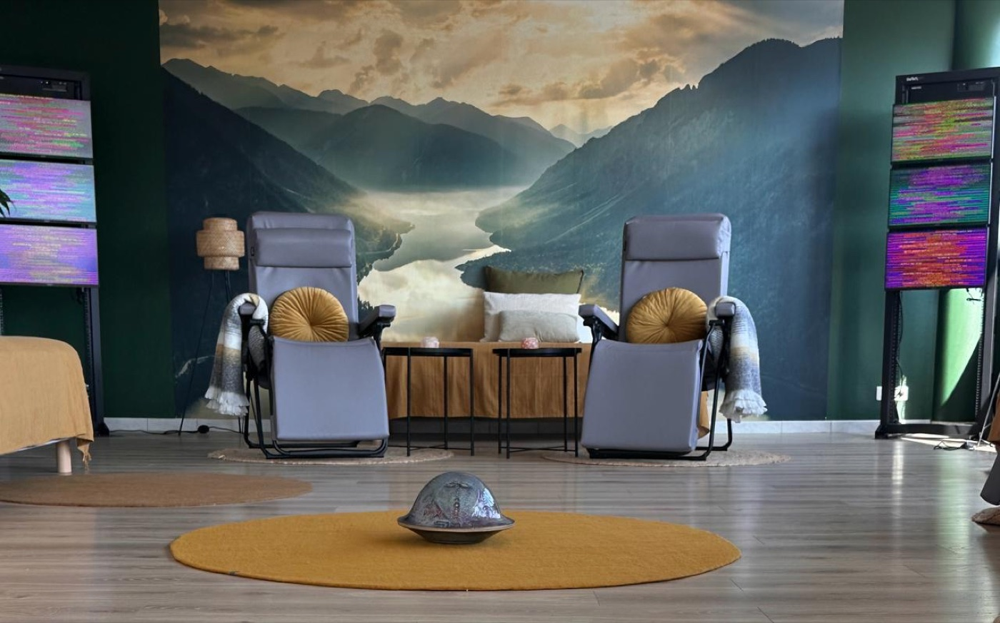
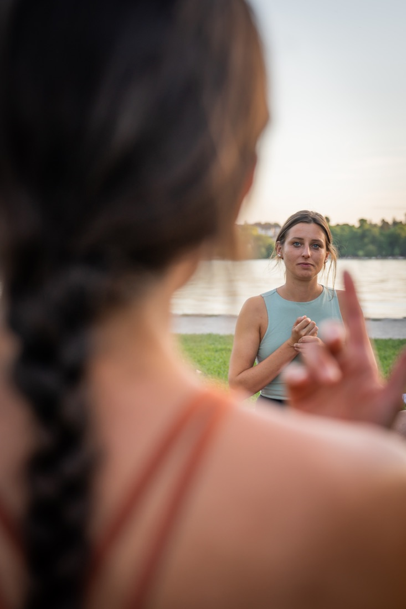

Yoga traditionnel à Annecy · en extérieur · sans prérequis
Une pratique du yoga ancrée dans la tradition, pour cultiver présence et paix intérieure. Ouvert à toutes et à tous, quel que soit votre niveau.
“Ici le yoga n'est pas une performance physique,
il est la voie de reconnexion au Soi.

Enchantée
Professeure de yoga traditionnel à Annecy, je propose une pratique douce et accessible, loin de toute idée de performance. Pas besoin d'être souple, sportif ou expérimenté : il suffit d'avoir envie de prendre un moment pour soi.
Le yoga est entré dans ma vie de façon spontanée et naturelle il y a cinq ans, à Montréal. Ce fut une évidence, un appel de l'âme.
À cette époque, je cherchais une manière « d'aller mieux », sans réellement savoir ce que cela signifiait. Puis, peu à peu, tout a commencé à prendre sens grâce au yoga.
Ce n'est que récemment, de retour en France, au début de ma formation au sein du Sadhana Life Center, que j'ai été initiée au yoga traditionnel. J'ai alors découvert une discipline qui va bien au-delà du simple bien-être : une quête intérieure profonde, un voyage entre l'ombre et la lumière, un cheminement qui ne cesse jamais réellement. Car le yoga est avant tout cela : une voie intérieure, un retour vers le Soi.
Mon enseignement s'inscrit dans la lignée de T. Krishnamacharya, selon la pédagogie du viniyoga, et s'inspire des enseignements traditionnels de l'Inde, dans lesquels le souffle guide le mouvement et où la pratique s'adapte à chacun, dans le respect du corps, du rythme et de l'état intérieur. Ici, le yoga n'est plus une gymnastique ni une recherche de performance, mais une pratique de présence et d'écoute de soi.
Dans mes cours, vous retrouverez cet état d'esprit ainsi que cette philosophie. Au-delà des asanas, vous serez amené·e·s à pratiquer des pranayamas, des chants, des mantras, ainsi que des temps de méditation. Vous découvrirez alors, au fil de la pratique, ce qu'est véritablement le yoga.
Mes cours sont pensés comme un espace dans lequel chacun peut revenir à lui-même, sans jugement ni recherche de performance. Ils sont accessibles à tous, débutants comme pratiquants plus expérimentés, chacun étant invité à pratiquer à son propre rythme.
J'ai à cœur de transmettre un yoga authentique qui invite chacun à ralentir, respirer et retrouver un espace de paix intérieure.
— Alizée 🐘
Ce que l'on explore ensemble

Les postures. On habite le corps en douceur, on l'assouplit et on le renforce, à son rythme et sans jamais forcer. Le corps devient un point d'ancrage vers le calme.

Le souffle. Apprendre à respirer consciemment pour apaiser le mental, libérer les tensions et retrouver de l'énergie. Un outil précieux à emporter dans le quotidien.

La voix et le son. Les chants traditionnels apaisent, recentrent et créent un espace de partage. Aucune compétence vocale requise : on chante avec le cœur.

Le silence intérieur. Quelques minutes pour revenir à l'instant présent, observer ses pensées et cultiver une paix qui dure bien au-delà du tapis.
Pratiquer avec moi
Choisis la formule qui te ressemble : en plein air à prix libre au bord du lac, en studio, ou en accompagnement individuel sur mesure.

Des séances en extérieur, au bord du lac d'Annecy, ouvertes à toutes et à tous, à prix libre.
Découvrir
Mes cours au studio, en petit groupe, dans un cadre chaleureux et intimiste.
Découvrir
Un yoga doux dans un cocon de bien-être équipé de la technologie EESystem, à Seynod.
Découvrir
Un accompagnement 100 % personnalisé, dans la tradition du yoga thérapie (cikitsa).
DécouvrirEn images


Découvre toutes mes formules de cours de yoga à Annecy et alentours, et réserve ta place en quelques clics.
Réserver un cours